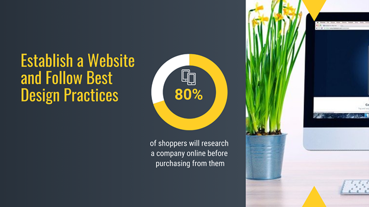

Although it is vital to have an online presence in today’s digital world, getting noticed and being visible to potential customers is even more crucial.
Your online content spreads the word about how your brand’s offering will solve your target audiences’ problems and make their lives easier.
However, you will only reap the rewards if consumers looking for what you are selling can find and see your content.
Below are seven practical strategies to boost your online visibility.
1. Establish a Website and Follow Best Design Practices
More than 80% of shoppers will research a company on the web before purchasing from them. However, only 50% of small businesses have a website and are missing out on massive online traffic.

This is why having a website is a necessity. It is a digital location like an online version of a brick-and-mortar store.
Whether you choose to build your own site using a website builder or hire a web design agency, make sure your site follows the web design best practices below:
- Avoid massive blocks of text.
- Create and adhere to a style guide for consistent branding.
- Insert optimized and compressed visuals to break up written content.
- Ensure that your site is mobile responsive.
- Make text easy to read with short paragraphs and bullet points where applicable.
- Feature clear and obvious call-to-action, so users know what action to take.
- Use simple navigation to ensure a positive user experience.
- Be consistent with your page layout, colors, and design elements.
Website design plays an integral role in how users perceive your website and influences their purchase decisions.
Now let us discuss how to make sure your potential customers can find your site.
2. Optimize Your Website for SEO
Search engine optimization (SEO) refers to all the activities aimed at driving high-quality traffic to your site through organic search engine queries.
To understand how SEO works, think of how you use search engines. When you have a question or are looking for something online, you type your question or describe what you want to find into a search field.
Google then answers you by returning websites it deems relevant to your search. But how does Google know what to show you and in what order?
It needs to know that your website is there, what it is about, and its popularity. That is what optimizing your website for SEO will do for you.
SEO does not happen overnight and takes time. Additionally, there are no shortcuts, and optimizing for SEO is not a finite process.
You will need to constantly tweak your website to stay in the game because search engines change their algorithms often, and competition is fierce.
Google and other search engines use crawlers to search for web pages. They find them by following links and analyzing XML sitemaps.
What should you do to make your website search engine friendly? Below are several of the critical website elements for optimizing websites:
- Use an internal linking strategy that makes it easy for search engines to find your most popular pages.
- Include an XML sitemap formatted to tell Google which pages they can search.
- Choose a URL structure and use it consistently.
- Make sure your website is mobile-friendly.
- Keep URLs short, relevant to the page contents, and easy for search engines and humans to read.
- Avoid duplicate content.
- Be sure that your web pages load quickly for optimal user experience.
- Avoid using too many ads or popups on your site. They are intrusive to the user experience and may result in lower search engine rankings.
To gain insights into how Google sees your website, add it to Google Search Console. Analyze the data and reports to see the search terms people are using to find your site, how your pages look in search results, and how often they are clicked.
This way, you will know what is working and what is not, and you can make changes where necessary to improve your website’s performance.
3. Add Your Website to Online Directories and Social Media Sites
Google is not the only place to list your website. There are numerous other online directories and social media sites where you can add your website and create profiles, including:
- Mantra
- com
- Google My Business
- CitySearch
- Yelp
- Angie’s List
The more places your website appears on the web, the more likely your target audience will find you.
4. Create and Maintain a Blog
A blog is an effective and strategic way to establish a loyal following of interested readers while also increasing your online visibility.
By sharing your expertise of relevant and helpful information for your target market, you build a connection with them.
The more unique and valuable your content, the higher the likelihood visitors will return to your blog to read your next piece of content.
Every post you publish is an opportunity to get noticed by Google as a trusted resource for the keywords and phrases you target.
According to HubSpot, brands that blog as part of their marketing initiatives see 13 times the ROI of companies that do not.
You should create a comprehensive blog content strategy that includes:
- A clear understanding of what topics your target audience is searching for on the internet.
- Consistent creation of valuable and relevant content your target market wants to read.
- Writing about topics that align with your brand.
Do not make the mistake of writing blog posts just for the sale of writing. Irrelevant or poorly written content will hurt your reputation and search engine rankings in the long run.
5. Encourage Online Customer Testimonials and Reviews
People like to do business with those they know, like, and trust. This is one of the primary reasons personal referrals from family and friends play a vital role in purchasing decisions.
When it comes to who to believe, consumers are highly more likely to trust what others say about your products and services than what you say.
It is for this reason that consumers are influenced by customer testimonials, reviews, and referrals. According to research, shoppers are 71% more comfortable purchasing after reading customer reviews.
There are several sites where customers can leave reviews for companies, including Yelp, Facebook, and Google.
Other more industry-specific customer review sites include:
- G2 Crowd for digital tools and software reviews.
- TripAdvisor for travel-related reviews.
- Zomato for food-related and restaurant reviews.
When you leave your brand open to reviews, you have to be prepared to deal with negative reviews.
What can you do if someone decides to leave a fake or negative review about your company? Google offers the ability to remove reviews that do not meet their criteria under the User Contributed Content Policy.
If you see a review that includes hate speech, spam, illegal information, conflicts of interest, and fake comments, report it to Google by flagging it.
They will check the review and remove it if it violates their policy. For other negative reviews, you should respond promptly, publicly, personally, and professionally.
It is best not to delete negative comments to avoid causing the person with the complaint from becoming angrier. And it could harm your brand in the long run.
If possible, try to take the conversation offline via a direct message, phone call, or email message to resolve concerns, complaints, or other issues.
6. Develop Relationships with Online Influencers
Working with online influencers who already have established brands and an engaged social following is a powerful way to increase your online visibility.
Influencers provide social proof within their community to their followers who share the same values and needs.
Try looking for influencers in industries that are complementary rather than competitive to yours. Possible strategies include:
- Offering your product or service to an influencer and then asking them to write a review on their blog or social media account.
- Inviting them to write a guest post on your blog. They, in turn, will promote it to their followers, a new audience of potential customers.
No matter how you decide to work with influencers, make sure to develop mutually beneficial relationships.
And most importantly, be sure to establish trackable key performance indicators (KPIs) about campaign expectations and goals.
Are You Ready to Get More Eyes on Your Brand?
As outlined above, there are several steps you can take to increase your online visibility. From building and optimizing a website, adding your website to online directories and social media sites, creating and maintaining a blog, encouraging customer reviews, and developing relationships with influencers, you will be on the right track to broadening your online reach.
Keep in mind that nothing will happen overnight. It takes time for all your initiatives to pick up traction and work together to boost traffic to your website.
About the Author
Julie Weishaar Visual Digital Marketing Specialist for New Horizons 123, Julie works to grow small businesses, increasing their online visibility by leveraging the latest in internet and video technologies.
She specializes in creative camera-less animated video production, custom images, content writing, and SlideShare presentations.
Julie also manages blog management, email marketing, marketing automation, and social media for her clients.
Leave a Reply